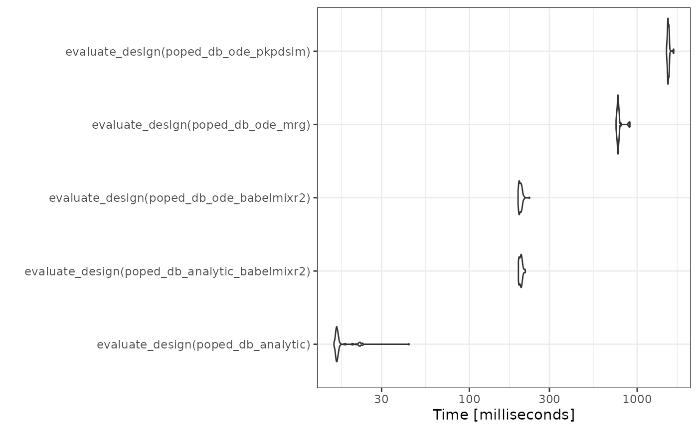

Introduction – using babelmixr2 with PopED
babelmixr2 now introduces a new method taking
rxode2/nlmixr2 models and optimal design using
PopED.
As in the PopED vignette comparing ODE solvers (and their speeds), this section will:
- take the model described and adapt it in two different
rxode2model functions, the solved and ode cases (this is done by thenlmixr()call which creates aPopEDdatabase) - compare these examples to the pharmacometric solvers in the PopED
vignette (
mrgsolveandPKPDsim)
babelmixr2 Ode solution
library(babelmixr2)
library(PopED)
e <- et(amt=1, ii=24, until=250) %>%
et(list(c(0, 10),
c(0, 10),
c(0, 10),
c(240, 248),
c(240, 248))) %>%
dplyr::mutate(time =c(0, 1,2,8,240,245))
# model
f <- function() {
ini({
tKA <- 0.25
tCL <- 3.75
tV <- 72.8
Favail <- fix(0.9)
eta.ka ~ 0.09
eta.cl ~ 0.25 ^ 2
eta.v ~ 0.09
prop.sd <- sqrt(0.04)
add.sd <- sqrt(0.0025)
})
model({
ka <- tKA * exp(eta.ka)
v <- tV * exp(eta.v)
cl <- tCL * exp(eta.cl)
d/dt(depot) <- -ka * depot
d/dt(central) <- ka * depot - cl / v * central
cp <- central / v
f(depot) <- DOSE * Favail
cp ~ add(add.sd) + prop(prop.sd)
})
}
poped_db_ode_babelmixr2 <- nlmixr(f, e,
popedControl(a=list(c(DOSE=20),
c(DOSE=40)),
maxa=c(DOSE=200),
mina=c(DOSE=0)))
#> ℹ infer estimation `poped` from control
#> ℹ groupsize should be specified; but for now assuming 20
#> ℹ assuming group size m=2
#> using C compiler: ‘gcc (Ubuntu 11.4.0-1ubuntu1~22.04) 11.4.0’
#>
#> using C compiler: ‘gcc (Ubuntu 11.4.0-1ubuntu1~22.04) 11.4.0’
e <- et(amt=1, ii=24, until=250) %>%
et(list(c(0, 10),
c(0, 10),
c(0, 10),
c(240, 248),
c(240, 248))) %>%
dplyr::mutate(time =c(0, 1,2,8,240,245))
# model
f <- function() {
ini({
tKA <- 0.25
tCL <- 3.75
tV <- 72.8
eta.ka ~ 0.09
eta.cl ~ 0.25 ^ 2
eta.v ~ 0.09
prop.sd <- sqrt(0.04)
add.sd <- sqrt(0.0025)
})
model({
ka <- tKA * exp(eta.ka)
v <- tV * exp(eta.v)
cl <- tCL * exp(eta.cl)
d/dt(depot) <- -ka * depot
d/dt(central) <- ka * depot - cl / v * central
cp <- central / v
f(depot) <- DOSE
cp ~ add(add.sd) + prop(prop.sd)
})
}
poped_db_ode_babelmixr2 <- nlmixr(f, e,
popedControl(a=list(c(DOSE=20),
c(DOSE=40)),
maxa=c(DOSE=200),
mina=c(DOSE=0)))
#> ℹ infer estimation `poped` from control
#> ℹ groupsize should be specified; but for now assuming 20
#> ℹ assuming group size m=2
#> using C compiler: ‘gcc (Ubuntu 11.4.0-1ubuntu1~22.04) 11.4.0’
#>
#> using C compiler: ‘gcc (Ubuntu 11.4.0-1ubuntu1~22.04) 11.4.0’
f2 <- function() {
ini({
tV <- 72.8
tKA <- 0.25
tCL <- 3.75
Favail <- fix(0.9)
eta.ka ~ 0.09
eta.cl ~ 0.25 ^ 2
eta.v ~ 0.09
prop.sd <- sqrt(0.04)
add.sd <- fix(sqrt(5e-6))
})
model({
ka <- tKA * exp(eta.ka)
v <- tV * exp(eta.v)
cl <- tCL * exp(eta.cl)
cp <- linCmt()
f(depot) <- DOSE
cp ~ add(add.sd) + prop(prop.sd)
})
}
poped_db_analytic_babelmixr2 <- nlmixr(f, e,
popedControl(a=list(c(DOSE=20),
c(DOSE=40)),
maxa=c(DOSE=200),
mina=c(DOSE=0)))
#> ℹ infer estimation `poped` from control
#> ℹ groupsize should be specified; but for now assuming 20
#> ℹ assuming group size m=2
library(ggplot2)
library(microbenchmark)
compare <- microbenchmark(
evaluate_design(poped_db_analytic),
evaluate_design(poped_db_analytic_babelmixr2),
evaluate_design(poped_db_ode_babelmixr2),
evaluate_design(poped_db_ode_mrg),
evaluate_design(poped_db_ode_pkpdsim),
times = 100L)
autoplot(compare) + theme_bw()
Note that the babelmixr2 ode solver is the fastest ode
solver in this comparison. Among other things, this is because the model
is loaded into memory and does not need to be setup each time. (As
benchmarks, the mrgsolve, PKPDsim and
rxode2 implementation on the PopED’s website
is included).
Also to me, the speed of all the tools are reasonable. In my opinion,
the benefit of the babelmixr2 interface to
PopED is the simplicity of using nlmixr2 /
rxode2 functional models or fits directly in
PopED without relying on conversions.
The interface is a bit different than the traditional
PopED interface, and requires a design data-set as well as
a popedControl() to setup a PopED database to
run all of the PopED tasks. This is because traditionally
nlmixr2 takes a dataset, “estimation” method and controls
to change estimation method options.
babelmixr2 adopts the same paradigm of model, data,
control to be applied to PopED. This should allow easy
translation between the systems. With easier translation, hopefully
optimal design in clinical trials will be easier to achieve.